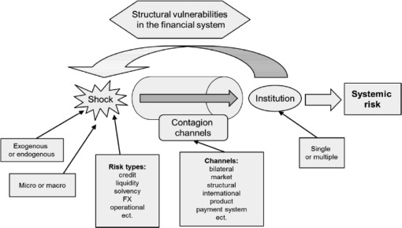

시스템 리스크 분석: (1) 시스템 리스크 개념
Systemic Risk
시스템 리스크
시스템 리스크 (systemic risk): 금융중개기능이 원활히 작동하지 못하여 경제성장과 사회후생에 심각하게 손상을 줄 정도의 심각한 금융불안정을 지칭하는 시스템적 사건이 발생할 위험 - 유럽중앙은행(ECB(2010))

금융에서 시스템리스크는 금융시스템 또는 한 지역·국가의 전체 시장, 나아가 글로벌 시장의 붕괴로 이어지는 위기를 말한다. 2008년 글로벌 금융위기의 강력한 파괴력과 거대한 연쇄반응은 금융안정과 관련하여 시스템리스크의 중요성을 인식하게 했다.
전통적인 금융 리스크와 다른 가장 중요한 특징은 “내부 및 외부 요인의 지속적인 반응으로 인해 전체 금융 시스템에 걸친 위험 전이 및 시스템 장애의 문제”이다. 따라서 시스템 리스크에 따른 결과는 “계단식” 실패로 이어지고 금융 시스템의 개인에게 영향을 미쳐 은행 시스템이 유동성 문제와 지불 불가 상태가 된다. 즉, 시스템 금융 리스크는 글로벌 또는 지역 금융 시스템의 유동성 위험을 유발하는 연쇄적 위기로 설명될 수 있다(Silva, Kimura, & Sobreiro, 2017).
지난 10년이 넘는 기간 동안 금융 생태계의 연구, 금융 감독, 국경 간 자본 흐름 모니터링 등 시스템적 금융 위험에 초점을 맞춘 많은 양의 연구가 있었다. 그러나 현대 금융은 이미 광범위하고 상호 연결된 네트워크를 갖춘 상호의존적 시스템으로 구성되어 있으며, 이는 점점 더 글로벌해지는 사회의 특성을 따르고 있다.
따라서 현행 금융의 시스템 리스크에 대응하기 위해서는 비정상적인 위험행위를 자동으로 탐지하고 금융시장의 대규모 금융데이터를 신속하게 처리함으로써 정보기술(IT) 기법을 활용하여 위험 단서와 목적을 신속하게 파악하고 발견할 수 있는 새로운 도구가 개발되어야 한다. 지능적이고 자동화된 기계 학습 방법은 위험 성향과 함께 점점 더 복잡해지는 금융 네트워크, 금융 거래의 빅데이터, 시장 정서 등으로 인한 시스템 위험을 평가하고 탐지하는 도구가 될 수 있다.
시스템 리스크의 특징
시스템 리스크의 특징을 설명한 선행연구
Cifuentes(2003): 금융시스템에 집중도(concentration)가 높아질수록 충격이 금융기관들 간에 신속하게 잘 전파되어 시스템 리스크가 높아진다고 주장
De Nicolo et al.(2012): 미시적 금융불안정이 시스템리스크로 확산되는 과정에서 부의 외부성(negative externalities)이 중요한 역할을 한다고 강조
BIS(2010): 시스템리스크를 특정 시점을 기준으로 위험도가 금융시스템에 어떤 모습으로 분포되어 있는지에 주목하는 횡단면 위험과 시스템리스크가 시간에 따라 증가하는지 여부에 주목하는 시계열적 위험으로 구분
- 소수의 대형 금융기관에 위험이 집중되거나 금융기관들 간에 상호 연계성이 강할수록 시스템리스크는 커짐(횡단면 위험)
- 경기호황기의 지나친 신용을 공급은 경기불황기에 나타날 수 있는 금융불안정을 더 심화시킴(시계열적 위험)
시스템 리스크 요인
시스템 리스크를 축적시키는 요인
투자자, 금융기관의 집단적 협조실패(coordination failure): 은행예금인출 쇄도(bank run), 자산 급매도(asset fire-sale)
정보 요인: 근시안적 행동(myopia), 정보의 비대칭성, 지나친 위험추구 성향
유인체계: 금융기관의 도덕적 해이, 단기 위험 추구 성향을 부추기는 보상체계
규제 및 감독체계 오류: 그림자 금융(shadow banking), 규제자본의 경기순응성
시스템 리스크를 촉발시키는 요인
금융시스템의 외부(exogenous) 또는 내부(endogenous) 충격(shock)
신용위험이나 유동성 위험과 같은 미시적 성격의 충격 또는 공통요인의 발현과 같은 거시적 충격
소수의 대형 금융기관의 도산 또는 소규모이지만 다수의 금융기관들이 한꺼번에 도산하는 형태
시스템 리스크의 전염과 확산
금융기관들 간의 다양한 형태의 부내(balance sheet) 또는 부외(off-balance sheet) 직접적 거래관계
정보 경로: 자산급매도, 쏠림현상(herding), 비이성적 행동 등
금융기관들의 투자나 위험관리 측면에서의 유사성
해외은행의 큰 비중 (해외의 외생적 충격)
금융시스템의 구조적 취약성(structural vulnerabilities)
- 높은 단기자금조달 의존도
- 노출 위험의 높은 유사성
- 중앙청산체계가 마련되어 있지 않은 장외거래 시장에 대한 높은 의존도
- 큰 비중을 차지하는 그림자 금융
- 높은 경기순응성을 보이는 신용공급
- 금융기관의 심각한 만기 및 통화의 불일치
참고 문헌
Kou, G., Chao, X., Peng, Y., Alsaadi, F. E., & Herrera-Viedma, E. (2019). Machine learning methods for systemic risk analysis in financial sectors. Technological and Economic Development of Economy, 25(5), 716-742.
Siegmann, A. (2017). Policy Lessons from Systemic Risk Modeling and Measurement. In Systemic Risk Tomography (pp. 239-273). Elsevier.
서상원. (2018). 시스템리스크의 측정과 관리: 서베이와 제언. 금융안정연구, 19(1), 131-232.